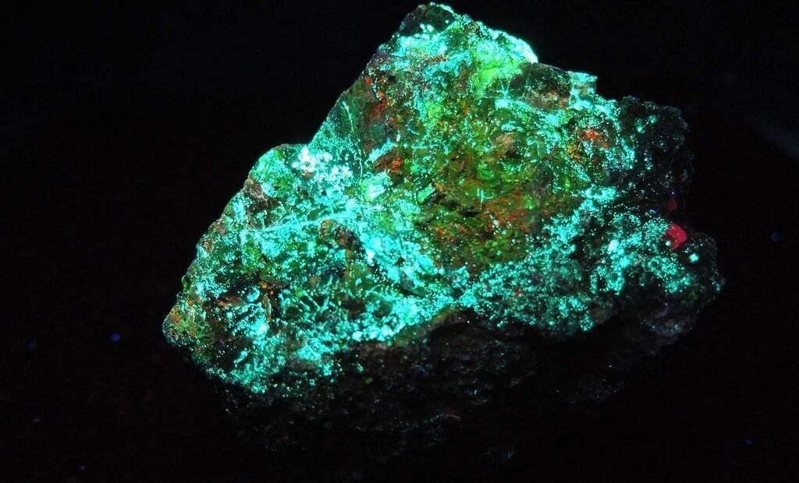

Технеций
Ура́н (U, лат. Uranium; устар. название — ура́ний) — химический элемент 3-й группы (по устаревшей классификации — побочной подгруппы третьей группы, IIIB) седьмого периода периодической системы химических элементов Д. И. Менделеева, с атомным номером 92.Относится к семейству актиноидов.Простое вещество Уран — слаборадиоактивный металл серебристо-белого цвета.
Открыт в виде оксида в 1789 г. М. Г. Клапротом, который дал элементу название в честь планеты Уран; в виде металла получен в 1841 г. французским химиком Э. Пелиго. Содержание урана в земной коре 2,7·10–4 %, во Вселенной 1·10–7 % по массе. Важнейшие минералы: уранинит, карнотит, тюямунит.

Технология урана связана с урановым топливным циклом и состоит из 4 частей, отличающихся изотопным составом перерабатываемых веществ и целями переработки. Наиболее крупнотоннажное производство связано с ураном, имеющим природное соотношение изотопов (цель – концентрирование и очистка, подготовка к разделению изотопов и производству Рu); меньшее по объёму – производство обогащённых по изотопу 235U соединений (цель – получение диоксида или сплавов урана для твэлов ядерных реакторов и ядерных зарядов). Ещё одно производство – переработка обеднённых по 235U соединений (цель – безопасное хранение, применение вне энергетики). Отдельная часть технологии урана – облучение металлических твэлов в ядерных реакторах для получения и выделения Pu (т. н. радиохимическое производство, цель – отделение от U, выделение некоторых изотопов, очистка от продуктов деления, перевод этих продуктов в форму, пригодную для длительного и безопасного хранения, подготовка к повторному разделению изотопов урана и изготовлению твэлов). Предполагается создание уран-плутониевого цикла с применением реакторов на быстрых нейтронах с топливом из смеси оксидов 239Pu и 238U.